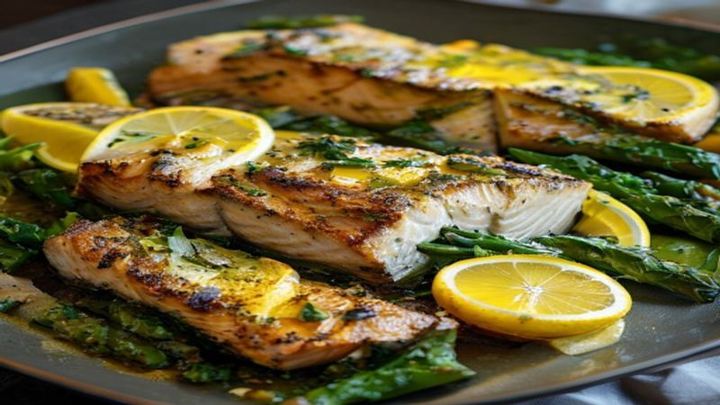

Sheet Pan Lemon Herb Salmon and Asparagus
This Sheet Pan Lemon Herb Salmon with asparagus is a 20-minute healthy dinner! Tender, flaky salmon and crisp asparagus all roasted together on one pan.
Ingredients
- 4 salmon fillets (6 oz each)
- 1 bunch asparagus, trimmed
- 3 tablespoons olive oil
- 3 cloves garlic, minced
- Zest and juice of 2 lemons
- 1 tablespoon fresh dill, chopped
- 1 tablespoon fresh parsley, chopped
- 1 teaspoon Dijon mustard
- Salt and pepper to taste
- Lemon wedges for serving
Instructions
When you want a healthy, elegant dinner with almost zero cleanup, this sheet pan salmon and asparagus is the answer! Everything roasts together beautifully in just 20 minutes.
Preheat your oven to 400°F (200°C) and line a large sheet pan with parchment paper.
Whisk together olive oil, minced garlic, lemon zest, lemon juice, dill, parsley, Dijon mustard, salt, and pepper in a small bowl. This herb sauce is incredible!
Place the salmon fillets in the center of the sheet pan. Arrange the asparagus around the salmon. Drizzle everything generously with the lemon herb sauce.
Roast for 12-15 minutes until the salmon flakes easily with a fork and the asparagus is tender-crisp with slightly charred tips.
For extra color and flavor, switch the oven to broil for the last 2 minutes. Watch carefully to avoid burning!
Serve immediately with fresh lemon wedges on the side. This pairs beautifully with rice, quinoa, or crusty bread.
Twenty minutes, one pan, and a dinner that looks and tastes like it came from a fancy restaurant! This sheet pan salmon is a weekly staple in our kitchen and we know it will be in yours too.
Recommended Kitchen Essentials
Every great recipe starts with great tools. Here are our top picks to make cooking easier and more enjoyable:
Support Quick Bites Kitchen — When you purchase through our links, we may earn a small commission at no extra cost to you. This helps us keep creating free recipes for everyone. Thank you!